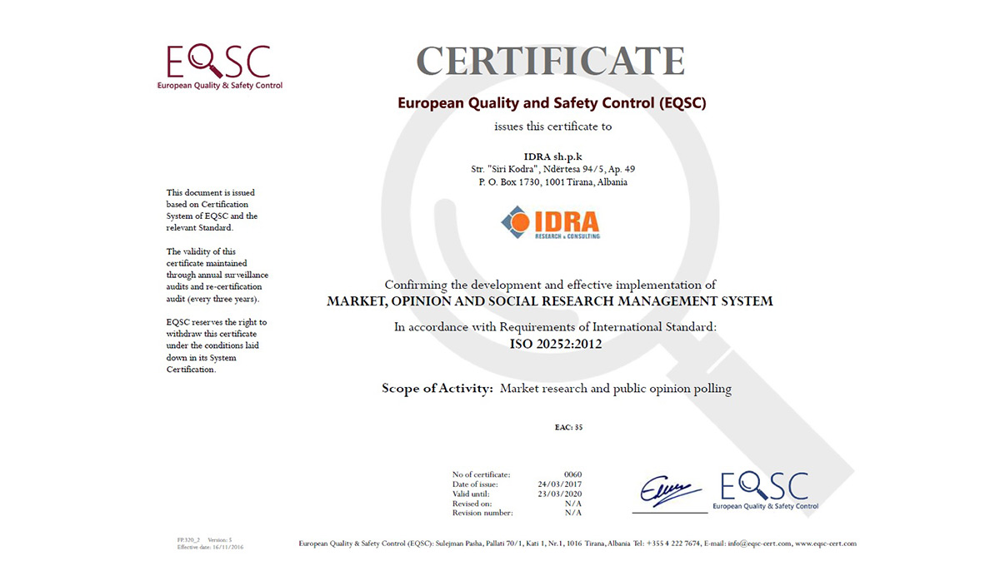

IDRA certified with ISO 20252 “Market, opinion and social research”
Quality is what sets us apart from our competition. IDRA Research & Consulting is certified with ISO standard 20252 “Market, opinion and social research”. This standard sets out requirements in a Quality Manangement System for organizations conducting market, opinion and social research.
The standard is divided into five sections which collectively cover the end-to-end process of a research project. These sections are:
- Research process management systems
- Managing the executive elements of research
- Data collection
- Data management and processing
- Reporting on research projects
IDRA is a pioneer for this certification in Albania and Kosovo showing yet again our dedication to the quality of our work.
